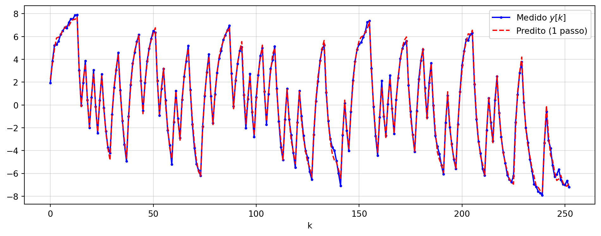
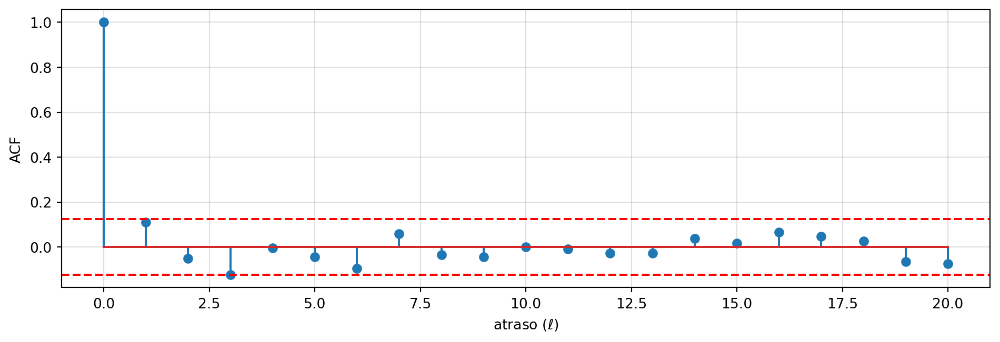

Na aula 02, simulamos um sistema dinâmico ARX e coletamos dados \((u[k], y[k])\) excitando-o com um sinal PRBS.
Hoje: mostrar que o mesmo aparato de mínimos quadrados — só que com uma matriz de regressores diferente — permite estimar os parâmetros de um modelo dinâmico.
Modelo ARX
O modelo AutoRegressive with eXogenous input, com \(n_a\) termos autorregressivos e \(n_b\) termos de entrada:
Com dados gerados por PRBS, a estimativa fica muito próxima dos valores verdadeiros usados na simulação.
Predição Um Passo à Frente
O modelo estimado prevê \(y[k]\) usando o valor real de \(y[k-1]\) (disponível no conjunto de dados):
y_pred_1passo = Phi @ theta_hat

Predição vs. Simulação Livre
Duas formas de usar o modelo estimado são bem diferentes:
Predição um passo à frente: usa o \(y\)real do instante anterior — sempre disponível durante a estimação, mas “trapaceia” ao validar o modelo;
Simulação livre: realimenta a própria saída predita, sem nunca olhar o \(y\) real — é o teste mais rigoroso, pois é assim que o modelo seria usado para prever o futuro sem medições.
Mesmo em malha livre — sem nenhuma realimentação de dados reais — o modelo acompanha bem a saída medida: sinal de que \(a_1, b_1\) foram bem estimados.
Qualidade do Ajuste: métrica FIT%
Uma métrica comum em identificação de sistemas normaliza o erro pela variação do próprio sinal:
Se o modelo captura bem a dinâmica, o resíduo deve parecer ruído branco — sem padrão temporal.
Checando a “Brancura” dos Resíduos
A autocorrelação mede se o resíduo em \(k\) tem relação com o resíduo em \(k-\ell\). Para ruído branco, ela deve ficar próxima de zero para \(\ell \neq 0\):
def acf(x, max_lag): x = x - np.mean(x) N =len(x) c0 = np.sum(x * x) / Nreturn np.array([np.sum(x[:N-lag] * x[lag:]) / N / c0 for lag inrange(max_lag +1)])r = acf(residuos, max_lag=20)limite =1.96/ np.sqrt(len(residuos)) # faixa de confiança ~95% para ruído branco

Os valores permanecem dentro da faixa de 95% (linhas vermelhas) — consistente com resíduo branco, indicando que a estrutura \(n_a=n_b=1\) foi suficiente.
Efeito da Ordem do Modelo
Ordem baixa demais (\(n_a, n_b\) pequenos): o modelo não tem “graus de liberdade” para capturar a dinâmica → resíduos correlacionados (viés);
Ordem alta demais: o modelo passa a ajustar o próprio ruído (overfitting) → parâmetros extras com pouco significado físico, sensíveis a novos dados;
Critérios formais de escolha de ordem (ex.: AIC, critério de informação) penalizam modelos com parâmetros em excesso — tema de aulas futuras.
Na prática: aumente a ordem apenas enquanto o FIT% melhorar de forma expressiva e os resíduos permanecerem não-brancos.
cond(Phi) com PRBS: 2.9
cond(Phi) com degrau: 50.4
theta_hat (degrau): a1=-0.674, b1=1.620 | verdadeiro: a1=-0.7, b1=1.5
O número de condição de \(\boldsymbol{\Phi}\) é muito maior com o degrau, e a estimativa de \(b_1\) fica visivelmente pior — a falta de persistência de excitação compromete a identificação, mesmo usando o mesmo estimador de mínimos quadrados.
Resumo
O modelo ARX vira uma regressão linear ao definir \(\boldsymbol{\varphi}[k]\) com saídas e entradas passadas;
A mesma equação normal \(\boldsymbol{\theta}=(\boldsymbol{\Phi}^T\boldsymbol{\Phi})^{-1}\boldsymbol{\Phi}^T\mathbf{Y}\) da aula 01 se aplica diretamente;
Predição 1 passo vs. simulação livre avaliam o modelo de formas diferentes — a simulação livre é o teste mais exigente;
FIT% e autocorrelação dos resíduos ajudam a julgar a qualidade e a ordem do modelo;
A qualidade da estimativa depende diretamente da persistência de excitação do sinal de entrada (aula 02).
Próximos temas: modelos com ruído colorido (ARMAX), mínimos quadrados recursivo, seleção de ordem.